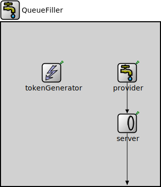

Package: inet.queueing.source
QueueFiller
compound moduleThis module produces packets in order to prevent a queue from becoming empty.
Usage diagram
The following diagram shows usage relationships between types. Unresolved types are missing from the diagram.
Inheritance diagram
The following diagram shows inheritance relationships for this type. Unresolved types are missing from the diagram.
Used in
| Name | Type | Description |
|---|---|---|
| QueueFillerTutorialStep | network | (no description) |
Properties
| Name | Value | Description |
|---|---|---|
| display | i=block/source |
Gates
| Name | Direction | Size | Description |
|---|---|---|---|
| out | output |
Unassigned submodule parameters
| Name | Type | Default value | Description |
|---|---|---|---|
| tokenGenerator.displayStringTextFormat | string | "generated %t tk\nto %s" |
determines the text that is written on top of the submodule |
| tokenGenerator.storageModule | string | "^.server" |
module path of the token storage where the tokens are generated via C++ method call |
| tokenGenerator.queueModule | string |
module path of the observed packet queue |
|
| tokenGenerator.minNumPackets | int | 1 | |
| tokenGenerator.minTotalLength | int | 0 b | |
| tokenGenerator.numTokens | double | 1 |
number of tokens generated when the queue becomes empty |
Source code
// // This module produces packets in order to prevent a queue from becoming empty. // module QueueFiller like IActivePacketSource { parameters: @display("i=block/source"); gates: output out @labels(pull); submodules: provider: <default("PassivePacketSource")> like IPassivePacketSource { parameters: providingInterval = default(0s); @display("p=250,100"); } server: <default("TokenBasedServer")> like IPacketServer { parameters: @display("p=250,200"); } tokenGenerator: QueueBasedTokenGenerator { parameters: storageModule = default("^.server"); @display("p=100,100"); } connections: provider.out --> server.in; server.out --> { @display("m=s"); } --> out; }File: src/inet/queueing/source/QueueFiller.ned
 This documentation is released under the Creative Commons license
This documentation is released under the Creative Commons license